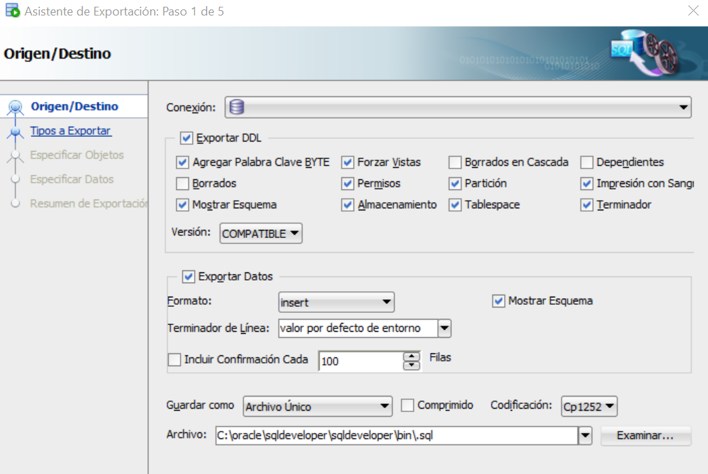
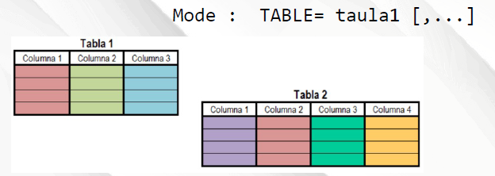
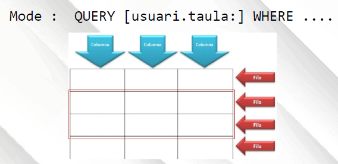
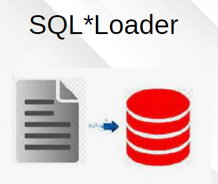

🔐 Encriptació en Oracle
Què és i per què encriptar?
L’encriptació converteix dades llegibles en format codificat (xifrat) que només pot ser desxifrat amb una clau. És essencial per protegir informació sensible.
Una altra manera d'encriptar és fer un HASH (Hashing). Objectiu: generar una empremta única i irreversible d’un text. Ús típic: Guardar contrasenyes de forma segura, Verificar integritat de fitxers, Firmes digitals.
Raons per aplicar encriptació:
- Protecció de dades sensibles (DNI, contrasenyes...)
- Evitar robatori de dades en cas d’atac o accés indegut
- Compliment legal (RGPD, LOPDGDD)
- Requisits de seguretat corporativa o governamental (CCN-CERT)
⚠️ Possibles inconvenients:
- Rendiment reduït si s’usa massivament
- Augment de complexitat en la gestió
- Pot limitar compatibilitats amb aplicacions
🛠️ Tipus d’encriptació a Oracle
- Manual amb DBMS_CRYPTO: per programadors o xifrat personalitzat
- TDE (Transparent Data Encryption): xifrat automàtic per columnes o tablespaces
DBMS_CRYPTO (manual)
Paquet per fer xifrat, hash i autenticació.
DBMS_CRYPTO.ENCRYPT()/DECRYPT()STANDARD_HASHDBMS_CRYPTO.HASH()
Exemple: fer un hash SHA-1 d’una contrasenya
(Les funcions HASH no xifren, sols resumeixen. No es poden desxifrar)
SELECT STANDARD_HASH('contrasenya', 'SHA1') FROM dual; --molt dèbil actualment
-- altre tipus de hash
SELECT STANDARD_HASH('contrasenya', 'SHA256') FROM dual; STANDARD_HASH soporta tots els algorismes moderns (MD5, SHA1, SHA256, SHA384, SHA512, SHA3_256, SHA3_512…)
També es pot fer amb la funcio HASH del paquet DBMS_CRYPTO
SELECT RAWTOHEX( DBMS_CRYPTO.HASH(HEXTORAW('1231'),3) ) FROM dual;
SELECT RAWTOHEX( DBMS_CRYPTO.HASH(UTL_I18N.STRING_TO_RAW('SECRETA'),4) ) FROM dual;
-- On el num del segon parametre => type 3:SHA-1 type 4:SHA256 type 5:SHA384 type 6:SHA512 Exemple de xifrat amb AES
SELECT RAWTOHEX(
DBMS_CRYPTO.ENCRYPT(
src => UTL_RAW.cast_to_raw('Text secret'),
typ => 4354, -- AES_CBC_PKCS5
key => UTL_RAW.cast_to_raw('0123456789ABCDEF0123456789ABCDEF'),
iv => UTL_RAW.cast_to_raw('ABCDEF9876543210')
)
) AS text_encriptat_hex
FROM dual;
Oracle determina automàticament quina versió d’AES s’ha d’aplicar segons la longitud del RAW
que s'envie al paràmetre key (Clau 16 bytes → AES-128 , Clau 24 bytes → AES-192 , Clau 32 bytes → AES-256)Convertir entre formats:
UTL_I18N.STRING_TO_RAW→ text a RAWRAWTOHEX→ RAW a hexadecimalUTL_I18N.RAW_TO_CHAR→ RAW a text
💾 TDE – Transparent Data Encryption
Xifrat automàtic a nivell de disc. No cal modificar el codi de les aplicacions.
Components:
- TDE Master Key → clau mestra
- Keystore (Wallet) → arxiu amb claus
- Column / Tablespace Keys → claus específiques
🔁 Modalitats:
- Column-level TDE: només algunes columnes
- Tablespace-level TDE: totes les dades dins l’espai de taules
Bones pràctiques
- Xifra només les dades sensibles
- Evita BASE64 o ROT13 per contrasenyes
- Usa funcions
HASH()per emmagatzemar contrasenyes - Gestiona la keystore amb seguretat
- Audita l’accés a dades xifrades
Conclusió
L’encriptació és essencial per a la protecció de dades en entorns reals i és un requisit legal i de bones pràctiques. Oracle ofereix solucions potents com TDE i DBMS_CRYPTO que cobreixen necessitats tècniques i legals.
🔐 Una bona gestió de claus, un ús moderat del xifrat i l’auditoria d’accés són claus per garantir seguretat real.
🕵️ Auditoria en Oracle
📘 Què és una auditoria?
L’auditoria és una funcionalitat dels sistemes gestors de bases de dades que permet registrar i controlar l’activitat dels usuaris. És especialment útil per motius de seguretat, detecció d’errors, traçabilitat i compliment normatiu (ex. RGPD).
🎯 Objectius de l’auditoria
- Detectar accions no autoritzades
- Rastrejar canvis o accés a dades sensibles
- Monitorar l’activitat d’usuaris privilegiats
- Complir amb auditories internes o externes
⚙️ Tipus d’auditoria en Oracle
- Estàndard (traditional): basada en ordres com
AUDIT - Auditoria unificada (Unified Audit): disponible des d’Oracle 12c
🔎 Diferències:
| Característica | Estàndard | Unificada |
|---|---|---|
| Implementació | Bases separades (AUD$) | Totes les auditories integrades |
| Activa per defecte | No | Sí, des de 12c |
| Control granular | Limitat | Molt flexible |
| Millor rendiment | No | Sí |
🛠️ Activar auditoria estàndard (tradicional)
Des d'Oracle23ai no es pot fer servir.
🛠️ Unified Audit (Oracle 12c+)
Unifica tots els registres d’auditoria: privilegis, ordres, errors, logons...
S’activa amb ENABLE_UNIFIED_AUDIT = TRUE al paràmetre de sistema.
SELECT VALUE FROM V$OPTION WHERE PARAMETER = 'Unified Auditing'; -- per saber si esta activa
Modes de unified
Mixed Mode: pots usar AUDIT SESSION i Unified Auditing alhora
Only Mode: només Unified Auditing funciona; els antics comandos AUDIT estan bloquejats
Exemple de política unificada:
CREATE AUDIT POLICY aud_logins
ACTIONS LOGON;
AUDIT POLICY aud_logins; -- Audita logins d'usuaris
CREATE AUDIT POLICY acces_alumnes
ACTIONS SELECT ON alumnes;
AUDIT POLICY acces_alumnes; -- Audita selects a una taula (de qualsevol usuari)
AUDIT POLICY acces_alumnes BY usuari1,usuari2; -- Audita selects a una taula (per part de usuari1 o usuari2)
📦 Vistes d’auditoria unificada
AUDIT_UNIFIED_POLICIESAUDIT_UNIFIED_ENABLED_POLICIESUNIFIED_AUDIT_TRAIL
Com vore les regles creades
SELECT policy_name, audit_option, condition_eval_opt, audit_condition FROM audit_unified_policies ORDER BY policy_name;
Com vore les regles actives
SELECT * FROM AUDIT_UNIFIED_ENABLED_POLICIES;
Com vore els registres de l'auditoria
SELECT EVENT_TIMESTAMP, DBUSERNAME, USERHOST, ACTION_NAME
FROM UNIFIED_AUDIT_TRAIL
WHERE OBJECT_NAME = 'ALUMNES';
ORDER BY EVENT_TIMESTAMP DESC;
-- Deshabilitar primer NOAUDIT POLICY acces_alumnes; -- Eliminar la política DROP AUDIT POLICY nom_politica;
Consells de seguretat i gestió
- Activa l’auditoria per accions sensibles (login, esborrar, canviar permisos)
- Revisa regularment els registres d’auditoria
- No deixis l’auditoria oberta en producció sense revisar l’espai
- Automatitza l’anàlisi amb scripts o informes
Conclusió
L’auditoria és una eina potent per a la seguretat i el control de bases de dades Oracle. Permet identificar comportaments sospitosos, controlar accés no autoritzat i mantenir la traçabilitat de les operacions. A més, és una pràctica recomanada per normatives legals i de qualitat.
🧬 Integritat en bases de dades Oracle
📘 Què és la integritat?
La integritat d’una base de dades fa referència al conjunt de normes i restriccions que garanteixen que les dades emmagatzemades siguen coherents, correctes i fiables. Aquesta integritat és fonamental per garantir la qualitat de la informació i el correcte funcionament de les aplicacions que la utilitzen.
Tipus d’integritat
- Integritat d’entitat → cada fila ha de ser identificable de forma única (clau primària)
- Integritat referencial → assegura la coherència entre taules relacionades (claus foranes)
- Integritat de domini → les dades han de complir certs valors o formats (tipus de dades, CHECK...)
- Integritat d’usuari → validacions aplicacionals o de negoci imposades per l'usuari o aplicació
Integritat d'entitat
Es garanteix mitjançant l’ús de PRIMARY KEY, que assegura que cada fila sigui única i no nul·la.
CREATE TABLE alumnes ( id NUMBER PRIMARY KEY, nom VARCHAR2(50) );
Integritat referencial
Manté la coherència entre dues taules relacionades mitjançant una FOREIGN KEY.
Evita que una fila faci referència a un valor inexistent.
CREATE TABLE cursos ( id NUMBER PRIMARY KEY, nom VARCHAR2(50) ); CREATE TABLE alumnes ( id NUMBER PRIMARY KEY, nom VARCHAR2(50), id_curs NUMBER, FOREIGN KEY (id_curs) REFERENCES cursos(id) );
Amb això, no es pot assignar un id_curs a un alumne que no existeixi a la taula cursos.
Integritat de domini
Limita els valors permesos en una columna. Es pot implementar amb tipus de dades, restriccions NOT NULL, CHECK o DEFAULT.
CREATE TABLE alumnes ( id NUMBER PRIMARY KEY, nom VARCHAR2(50) NOT NULL, edat NUMBER CHECK (edat >= 16), pais VARCHAR2(30) DEFAULT 'Espanya' );
Això garanteix que nom sempre tindrà valor, edat sigui ≥ 16 i pais tindrà un valor per defecte.
Integritat d’usuari
No s’implementa a nivell de base de dades, sinó via aplicacions o triggers. Controla normes específiques com:
- Un usuari no pot tenir dues reserves actives
- Els horaris d’una aula no poden solapar-se
Aquest tipus d’integritat sovint es basa en PL/SQL o lògica de negoci a l’aplicació.
Conclusió
Mantenir la integritat de les dades és essencial per garantir que el sistema sigui fiable, coherent i funcional. Oracle ofereix múltiples mecanismes per implementar integritat a nivell físic, lògic i d’aplicació.
🔐 “La seguretat comença amb la confiança en les dades. I la confiança es construeix amb integritat.”
Transaccions en Oracle
📘 Què és una transacció?
Una transacció és una seqüència d’operacions SQL (normalment de manipulació de dades: INSERT, UPDATE, DELETE) que es tracten com una unitat indivisible de treball.
L’objectiu d’una transacció és assegurar que les dades es mantinguin coherents i amb integritat.
Una transacció, o es fa tota o no es fa res, però no pot en cap cas quedar a mitges, una part feta i una altra no.
Totes les operacions que en formen part han de completar-se correctament. Si alguna falla, cap de les altres no ha de tenir efecte.
Els interbloquejos ( deadlocks ) són un problema que les transaccions i els mecanismes de control de concurrència intenten evitar o gestionar
Un interbloqueig passa quan dues o més transaccions es bloquegen mútuament, cadascuna esperant un recurs (normalment un registre o una taula) que l’altra té bloquejat.Comm que cap pot continuar, totes queden aturades indefinidament (i a més a més afecten a la resta de sessions)
Exemple senzill:
Transacció A té bloquejada la fila 1 i vol la fila 2.
Transacció B té bloquejada la fila 2 i vol la fila 1.
Cap pot continuar → deadlockPropietats d’una transacció (ACID)
- Atomicitat: totes les operacions s’executen o cap (tot o res)
- Consistència: deixa la BD en un estat vàlid després de completar-se
- Aïllament: cada transacció s’executa com si fos l’única
- Durabilitat: un cop feta la transacció, els canvis són permanents
Ordres bàsiques de control de transaccions
ORACLE és un sistema de base de dades purament transaccional, de tal forma, que la instrucció BEGIN TRANSACTION no existeix
En una transacció les dades modificades no són visibles per la resta d'usuaris fins que es confirme la transacció
COMMIT
Fa permanents tots els canvis realitzats en la transacció. No es poden desfer després. En este moment les dades modificades ja son visibles per la resta d'usuaris .
INSERT INTO alumnes VALUES (10, 'Joan', 20); COMMIT;
Les sentències de finalització de transacció són COMMIT i ROLLBACK
ROLLBACK
Desfà tots els canvis realitzats des del darrer COMMIT. Torna l’estat de la BD a com estava abans.
UPDATE alumnes SET edat = 30 WHERE id = 10; ROLLBACK; -- Anul·la l'actualització
SAVEPOINT
Permet definir punts intermedis dins d’una transacció per fer ROLLBACK parcial.
SAVEPOINT punt1; DELETE FROM alumnes WHERE edat < 18; SAVEPOINT punt2; UPDATE alumnes SET nom = 'Anònim' WHERE edat > 25; ROLLBACK TO punt1; -- desfà només fins al punt1
Transaccions automàtiques i manuals
- DDL: Oracle Server executa un COMMIT implícit abans i després de cada instrucció DDL,
- DCL: Oracle Server executa un COMMIT implícit abans i després de cada sentència DCL
- DML: Aquestes sentències no executen un COMMIT implícit
- Cridades a procediments o funcions: Aquestes sentències no executen un COMMIT implícit
- ALTER SESSION i ALTER SYSTEM: Aquestes sentències no executen un COMMIT implícit
- Els blocs
BEGIN...ENDno executen un COMMIT implícit.
Consells pràctics
- Fes
COMMITnomés quan estiguis segur que la transacció ha anat bé - Utilitza
SAVEPOINTper controlar operacions complexes - Usa
ROLLBACKsempre que detectis un error o canvi involuntari - En entorns multiusuari, la gestió correcta de transaccions evita bloquejos i inconsistències
Relació amb la seguretat
Una gestió acurada de les transaccions garanteix:
- Traçabilitat i reversibilitat en cas d’error
- Integritat davant fallades del sistema
- Registre coherent en conjunció amb l’auditoria
Oracle té mecanismes per detectar deadlocks de manera automàtica. Quan detecta que dos transaccions no poden continuar, avorta una de les dues i retorna un error:
La transacció que Oracle sol avortar és la que porta menys treball fet (la que ha modificat menys dades), també coneguda com la “victim transaction”, per minimitzar la pèrdua de treball.
ORA-00060: deadlock detected while waiting for resourceAixí, almenys una pot continuar i el sistema no queda bloquejat.
Quan Oracle mata una transacció per deadlock, la seva part desada es desfà (rollback), mantenint la coherència.
Conclusió
El control de transaccions és una eina fonamental per garantir que el sistema de base de dades sigui segur, coherent i robust. Oracle proporciona instruccions clares per controlar de forma manual i segura l’execució de canvis en les dades.
Exemple (vore transacció per completar)
Obrim 2 sessions ( en SQL*PLUS ) amb usuari1 ( dos cmd diferents)
En la primera sessió (1er CMD)
SQL> insert into prueba10 (id, nom) values (1000,’valor1 ’);
1 row created.
En la segon sessió (2on cmd)
SQL> select count(*) from prueba10;
COUNT(*)
----------
0
En la primera sessió (1er CMD)
SQL> commit;
En la segon sessió (2on CMD)
SQL> select count(*) from prueba10;
COUNT(*)
----------
1
Exemple ( de deadlock )
Suposem que tenim una taula:
CREATE TABLE comptes (
id NUMBER PRIMARY KEY,
saldo NUMBER
); i dos files
INSERT INTO comptes VALUES (1, 100);
INSERT INTO comptes VALUES (2, 200);
COMMIT; Obri dos sessios sql diferents, Sessio A i Sessio B
Sessio A -- Bloqueja la fila amb id = 1 UPDATE comptes SET saldo = saldo + 10 WHERE id = 1; Sessio B -- Bloqueja la fila amb id = 2 UPDATE comptes SET saldo = saldo + 20 WHERE id = 2; -- SESSION A intenta agafar la fila que té B UPDATE comptes SET saldo = saldo - 5 WHERE id = 2; -- → A queda esperant, perquè B té bloquejada la fila 2. SESSION B intenta agafar la fila que té A UPDATE comptes SET saldo = saldo - 5 WHERE id = 1; -- → B queda esperant, perquè A té bloquejada la fila 1. -- I ací és on Oracle detecta el deadlock -- Oracle trenca el bloqueig i dona error a una de les dues sessions (normalment la segona que entra al conflicte)
💾 Recuperació i còpies de seguretat en Oracle
Per què cal fer còpies de seguretat?
Les còpies de seguretat són essencials per garantir la continuïtat del servei i la protecció de la informació. En cas de fallada del sistema, error humà, corrupció de dades o atacs, una bona estratègia de backup permet recuperar la base de dades sense pèrdues.
La qüestió de fer còpies de seguretat des de dins d’Oracle (usant eines com RMAN o exportacions lògiques com Data Pump) versus fer-les des de fora (copiant fitxers del sistema operatiu) és molt important perquè afecta la consistència i la recuperabilitat de la base de dades
Fer còpies de seguretat des de dins d’Oracle és crític perquè assegura que la base de dades es pugui recuperar correctament i sense pèrdua de dades, fins i tot si està en funcionament. Fer-ho des del sistema operatiu només és segur si la base està apagada, cosa poc pràctica en entorns de producció
Problemes si es fan des de fora del SGBD: Inconsistència, Recuperació complicada, No registra transaccions
Avantatges si es fan des de dins del SGBD: Consistència de dades, Recuperació puntual, Gestió de logs automàtica, Còpies en calent, Automatització i verificació:
🎯 Objectius d’una còpia de seguretat
- Restaurar les dades després d’un error
- Permetre la recuperació puntual o total
- Facilitar entorns de prova o migracions
- Complir normatives legals (protecció de dades)
Tipus de còpies de seguretat
- Físiques: còpies dels fitxers físics (datafiles, control files, logs...)
- Lògiques: exportació d’esquemes, taules, usuaris o dades via utilitats com
expdpiimpdp
- Totals: Una PDB sencera, o una CDB sencera
- Parcials: Part d'una BBDD, un Tablespace, Una taula concreta, Un esquema
- Online: També s’anomena còpia de seguretat en calent. Es fa mentre la base de dades continua activa i els usuaris treballen.
- Offline: També s’anomena còpia de seguretat freda. Es realitza quan la base de dades està completament aturada
Estratègies de backup
- Completa: còpia total de la BD
- Incremental: només les dades modificades des del darrer backup
- Diferencial: totes les modificacions des del darrer backup complet
- Continuada: amb redologs i archivelogs actius
Mecanismes d'Oralce
- Exportació: la còpia lògica es guarda en l’equip client
- DataPump: la còpia lògica es guarda en l’equip servidor
- RMAN: la còpia física o incremental es guarda en l’equip servidor
Eines principals de backup en Oracle
1. 📤 Exportació i importació legacy (Original Export))
exp / imp
- S'executa des de la línia de comandos/terminal
- La còpia lògica es guarda en l’equip des d'on s'executa (sol ser client)
- Modes: full, user (esquema), tablespace, table, query
- Es pot usar un fitxer de paràmetres parfile=
EXEMPLE
exp username/password@ipAddress:portNumber/serviceName file=/recovery_area/export/prueba_export.dmp full=yes buffer=1000000
Si volem fer un exp total (full=yes), l'usuari que l'execute necessita el rol EXP_FULL_DATABASE
Per cridar amb sys exp \'username/password@instance AS SYSDBA\' parametres

Un mecanisme molt semblant i més còmode i intuitiu es pot trobar a SQL Developer, amb l'eina de Exportar. Des del menu Eines-Exportació de base de dades, llança unes finestres per indicar que, com , on fer una exportació.
Les dades es guardarn en la màquina client ( o un lloc on esta puga accedir )
SQL Developer permet exportar / importar dades, esquemes i resultats de consultes a diversos formats 2. 📤 Data Pump
expdp / impdp
- S'executa des de la linea de comandos/terminal (però la còpia s'executa en el servidor)
- També es pot executar des de dins de l'SGBD amb el paquet DBMS_DATAPUMP (pròxim tema )
- La còpia lògica es guarda en l'equip servidor (o un lloc assolible des del servidor)
- Més ràpid, més rendiment, diversos fils en paral·lel
- Modes: full=Y, eschemas=esquema_1[, esquema_N], tablespaces=, tables=, QUERY=
- Es pot usar un fitxer de paràmetres parfile=
-- EXEMPLE -- Guardar tot un esquema (tots els objectes d'un usuari) expdp username/password@ipAddress:portNumber/serviceName directory=dumpdir dumpfile=export.dmp logfile=fichero.log expdp usuari/password SCHEMAS=usuari DUMPFILE=export.dmp LOGFILE=export.log --No cal posar path físic !! -- Recuperar en una altra BD impdp usuari/password DUMPFILE=export.dmp LOGFILE=import.log
- Que es pot guardar / recuperar (mode)
- Tot: FULL=Y
- Una o més Tablespaces: TABLESPACES=tb1[,...]
- Un o més esquemes: SCHEMAS= usuari1 [,...]
- Una o més taules: TABLE= taula1 [,...]
- Una part d'una taula: QUERY [usuari.taula:] WHERE ....
- No es poden combinar en una mateixa exportació, pero es poden fer executat diverses exportacions
 
Es necessari que el servidor tinga accés al lloc on farà (el servidor) les còpies
Primer: Definir un directori
CREATE [OR REPLACE] DIRECTORY directory_name AS 'path_name';
El path deu existir i tindre permisos d'escriptura
Els fitxers de destí NO deuen existir (o donarà error la còpia)
L'usuari que connecta ha de tindre permisos d'accés a les dades per fer còpies
Per fer una còpia completa es necessita un permís (ROL) concret
DATAPUMP_EXP_FULL_DATABASE DATAPUMP_IMP_FULL_DATABASE
EXEMPLE d'arxiu 'parfile' TABLESPACES=users DUMPFILE=exp2.dmp DIRECTORY=dirdump LOGFILE=exp2.log
3. 🔄 RMAN (Recovery Manager)
Eina oficial d'Oracle per fer backups i recuperar dades. Pot treballar amb còpies incrementals, verificar integritat i automatitzar tasques.
-- Exemple: backup complet
RMAN> BACKUP DATABASE;
-- Backup només de la part SYSTEM
RMAN> BACKUP TABLESPACE system;
-- Recuperació
RMAN> RESTORE DATABASE;
RMAN> RECOVER DATABASE;
📋 Exemple de procediment bàsic amb RMAN
-- Connexió
rman target /
-- Comprovació de còpia
VALIDATE DATABASE;
-- Còpia
BACKUP AS BACKUPSET DATABASE PLUS ARCHIVELOG;
-- Restauració
RESTORE DATABASE;
RECOVER DATABASE;

SQL*Loader és una utilitat que permet la inserció de dades des d'un arxiu pla a una o més bases de dades.
Durant una sola de les seves execucions és possible omplir múltiples taules amb dades de múltiples arxius, manejar registres d'ample variable o fix, manipular les dades entrants per a tractar amb valors nuls, delimitadors i espais en blanc, obviar registres o encapçalats i reaccionar enfront de fallades del procés de carregat
Arxius implicats en la recuperació
- Datafiles: contenen les dades
- Control file: descriu l'estructura de la BD
- Redo logs: registren tots els canvis
- Archivelogs: còpia dels redo logs, essencial per a recuperació completa
Escenaris de recuperació
- Recuperació completa: amb tots els archivelogs i datafiles
- Recuperació parcial: taules, fitxers o instància
- Restauració en cas de pèrdua del control file
Bones pràctiques de seguretat
- Programar backups regulars
- Mantenir còpies en ubicacions externes
- Fer proves periòdiques de recuperació
- Utilitzar
RMAN VALIDATEper comprovar integritat - Documentar el procediment de recuperació
Conclusió
Disposar d’un pla de còpies de seguretat fiable i efectiu és fonamental per garantir la seguretat i continuïtat de qualsevol sistema basat en Oracle. Les eines com RMAN i Data Pump permeten adaptar-se a múltiples escenaris, i una bona estratègia de backup ha d’estar acompanyada d’una política de recuperació clara.
⚖️ Normativa vigent en matèria de protecció de dades
📘 Què és la normativa de protecció de dades?
És el conjunt de lleis i regulacions que tenen com a objectiu garantir la privadesa i la seguretat de les dades personals que gestionen les empreses i organitzacions. Afecta directament la gestió dels sistemes d’informació, especialment els que contenen bases de dades amb informació de persones físiques.
🇪🇺 Reglament General de Protecció de Dades (RGPD)
- Nom complet: Reglament (UE) 2016/679 del Parlament Europeu i del Consell
- Aplicació: obligatòria a tots els estats membres de la Unió Europea des del 25 de maig de 2018
- Objectiu: protegir els drets fonamentals de les persones pel que fa al tractament de les seves dades personals
Principis bàsics del RGPD
- Lícit, lleial i transparent
- Finalitat determinada i legítima
- Minimització de dades
- Exactitud
- Limitació de conservació
- Integritat i confidencialitat
- Responsabilitat proactiva
👥 Drets de les persones usuàries
- Dret d’accés
- Dret de rectificació
- Dret de supressió (“dret a l’oblit”)
- Dret d’oposició
- Dret a la limitació del tractament
- Dret a la portabilitat de dades
🇪🇸 LOPDGDD – Llei orgànica 3/2018
A Espanya, la normativa RGPD es complementa amb la LOPDGDD:
- Nom complet: Llei Orgànica 3/2018 de Protecció de Dades Personals i garantia dels drets digitals
- Objectiu: adaptar el RGPD a l’ordenament jurídic espanyol i afegir drets digitals
Alguns punts destacats de la LOPDGDD
- Designació d’un Delegat de Protecció de Dades (DPO) en determinades entitats
- Mesures de seguretat segons el risc de les dades tractades
- Registre d’activitats de tractament
- Avaluació d’impacte quan hi ha risc elevat
- Drets digitals: educació digital, neutralitat, desconnexió laboral, etc.
Obligacions tècniques relacionades amb bases de dades
- Control d’accés i permisos per rols
- Auditories d’accés a dades personals
- Registre de canvis i transaccions
- Còpies de seguretat i plans de recuperació
- Encriptació de dades sensibles
Drets ARCO
- Accés
- Rectificació
- Cancel·lació
- Oposició
Paper del SGBD
- Gestió d’usuaris i permisos
- Sistemes de recuperació
- RI
- Encriptació (informació sensible)
- Auditoria
Classificar informació
- Nivell bàsic
- Nivell mig
- Nivell alt
Els procediments han d’estar documentats i supervisats per poder garantir el compliment de la normativa i la llei.
📊 Sancions per incompliment
El RGPD preveu sancions de fins al 4% del volum de negoci anual global o 20 milions d’euros, segons quina sigui més elevada.
Conclusió
Tant el RGPD com la LOPDGDD estableixen un marc normatiu estricte i necessari per protegir les dades personals. A l’hora d’administrar bases de dades, cal assegurar-se que:
- Les dades sensibles estan ben protegides
- Només hi accedeix qui està autoritzat
- Es poden traçar les operacions sobre dades personals
- Es poden complir els drets dels usuaris
⚖️ “Una base de dades segura no només és eficient, sinó també legalment responsable.”
Informe de bones pràctiques del CCN-CERT
CCN-CERT BP/22 Recomendaciones de seguridad para Oracle Database 19C
CCN-CERT BP/22 és un document tècnic que ofereix recomanacions i bones pràctiques en ciberseguretat, elaborat pel CCN-CERT, amb l’objectiu d’ajudar les administracions públiques i altres organitzacions a millorar la protecció dels seus sistemes d’informació